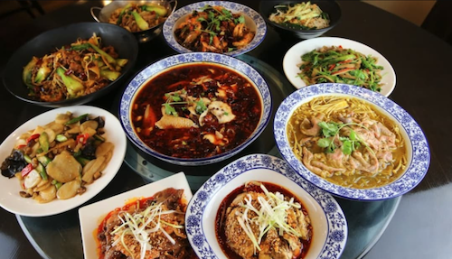

About Chinese Dishes
Chinese cuisine known as zhongcan, is a traditional style of cooking that emphasizes diverse flavors, meticulous techniques, and the philosophy of balance. Rooted in thousands of years of history and deeply influenced by Confucianism, Taoism, and regional customs, zhōngcān reflects China’s rich cultural heritage and respect for harmony between taste, nutrition, and aesthetics. Signature dishes such as Peking Duck, mapo tofu, and xiao long bao highlight the variety of regional styles—from the bold spice of Sichuan to the delicate freshness of Cantonese cooking. Celebrated globally for its complexity, symbolism, and communal nature, Chinese cuisine is not only a culinary experience but also a reflection of history, family, and tradition.
Click the image to order on Uber Eats.
Restaurant: Mala Restaurant
Spicy Dry Pot
If you're in the mood for something spicy, cozy, and totally customizable, head to Mala Restaurant in Boston. Their spicy dry pot is a fan favorite—and for good reason. The large portion lets you mix and match up to six veggies (shoutout to all the veggie lovers!). Top picks? Bamboo shoots, cauliflower, and seaweed—they soak up all that flavor so well. Want to throw in some meat? Pork belly and sliced beef are solid. The duck blood? A bit on the chewy side, so maybe skip that one. Overall though, it’s not trying to reinvent the wheel—it’s just a good, solid dry pot that hits right when you’re craving that familiar, bold flavor. Especially if you’ve been missing the taste of home. It’s not just spicy—it’s smoky, savory, and full of that wok-fried aroma that makes your mouth water before you even dig in. Whether you’re new to dry pot or already obsessed, this one’s a comforting, no-fail option.
Mala RestaurantRestaurant: My Happy Hunan Kitchen
Stewed Tofu with Duck Egg Yolk and Pork Floss
This dish is a total five-star favorite and a must-order every time I visit My Happy Hunan Kitchen in Boston. It might remind you of crab tofu at first glance, but the flavor combo of rich salted duck egg yolk and fluffy pork floss makes it something totally unique. The tofu is soft and silky, soaked in that creamy, savory egg yolk sauce. Topped with pork floss, every bite is packed with umami and just the right touch of sweetness. It’s pure comfort food—and absolutely perfect over a bowl of rice. Whether you’re here for a cozy solo meal or sharing dishes with friends, this one’s dangerously addictive. Once you start, you won’t want to stop.
My Happy Hunan KitchenRestaurant: Hao Shi Guang
Traditional Mao Xue Wang
If you're into bold, spicy, bring-on-the-heat kind of dishes, HaoShiGuang’s Traditional Mao Xue Wang is gonna be your new obsession. This dish is the real deal—loaded with all the classic ingredients like duck blood, beef tripe, tofu skin, spam, and more, all swimming in a deep red, fiery broth that’s full of Sichuan peppercorn numbing goodness. It’s rich, it’s spicy, and it smells amazing the second it hits the table. The portion is super generous too—perfect for sharing (or keeping to yourself if you're really hungry). Whether you're craving something super flavorful on a cold day or just want a hardcore Sichuan experience, this dish brings the heat and the satisfaction. Pro tip: don’t forget to order a bowl of rice to soak up that spicy broth—you’ll thank us later.
Hao Shi Guang